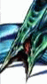
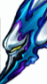

|
雷神
（Quezacotl）
|
称号：雷电精灵
绝技：雷电风暴
入手：游戏初期调查课桌电脑后获得。（PC版本亦可在开始时从Quistis处取得） |
|
潘多莫纳
（Pandemona）
|
称号：狂风巨人
绝技：暴风圈
入手：在Balamub小镇上与风神和雷神在旅馆交战时，从风神身上抽取获得。 |
|
希瓦
（Shiva）
|
称号：冰之女王
绝技：钻石之尘
入手：同雷神 |
|
地狱犬
（Ceberus）
|
称号：地狱魔犬
绝技：反击之狼烟
入手：在Galbadia与魔女Edea
交战前在大厅中央先与地狱犬交战，战胜后获得。 |
|
伊夫里特
（Ifrit）
|
称号：火之魔神
绝技：地狱火炎
入手：在炎之洞穴进行试炼时击败后获得。 |
|
亚历山大
（Alexander）
|
称号：神圣巨人
绝技：圣之审判
入手：在Galbadia与魔女Edea
交战时从其身上抽取获得。 |
|
塞壬
（Siren）
|
称号：海之魔女
绝技：寂静之音
入手：在电波塔与风兽交战时从其身上抽取获得。 |
|
地狱火车
（Doomtrain）
|
称号：超级魔神
绝技：究级暴走
入手：需要Solomon Ring和
Steel Pipe×6、Remedy+×6、Malboro×6，然后使用这些物品获得。 |
|
力之兄弟
（Brothers）
|
称号：仁义兄弟
绝技：兄弟合击
入手：在DellingCity执行无名王墓时击败他们获得。 |
|
巴哈姆特
（Bahamut）
|
称号：龙族之王
绝技：烈火圣焰
入手：在Deep Sea Research
Facility与之交战后获得。 |
|
暗黑破坏神
（Diablo）
|
称号：黑暗使者
绝技：暗之咆哮
入手：成为SeeD执行首项任务前在大门口与Cid校长谈话会赠送一个魔法之灯，然后使用此等进入交战场景，击败黑暗使者后获得。 |
|
巨仙人掌
（Cactuar）
|
称号：远古植物
绝技：针万本
入手：在Cactuar Island与其交战胜利后获得。 |
|
宝石鸟
（Carbuncle）
|
称号：光之精灵
绝技：红宝石之光
入手：在DellingCity刺杀Edea
时为了救Rinoa与两只Edea编出的怪兽交战，从其身上抽取获得。 |
|
菜刀王
（Tonberry）
|
称号：菜刀使者
绝技：菜刀攻击
入手：在Centra Ruins圆形广场打败18到22只小菜刀后菜刀王就会出现，战胜后获得。 |
 |
利维亚桑
（Levianthan）
|
称号：海之圣龙
绝技：大海啸
入手：拯救BalamubGarden后，在学院底层与投资者战斗时从其身上抽取获得。 |
 |
伊甸
（Eden）
|
称号：高科技生物
绝技：永恒的赞美
入手：在Deep Sea Research
Facility战胜Bahamut后下到最底层与Ultima Weapon交战时从其身上抽取获得。 |